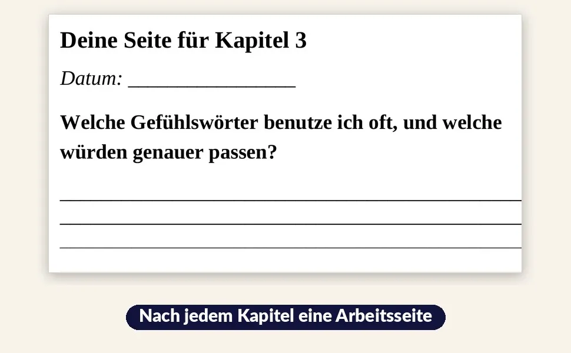

Kommunikation und Verständnis
Wie ihr besser zuhört, Wünsche klar aussprecht und fairer streitet. Klappt auch, wenn nur einer von euch liest.
Öffnet amazon.de in einem neuen Tab.
Ihr redet jeden Tag miteinander, und trotzdem kommt etwas anderes an, als gemeint war? Dann ist dieses Buch für dich.
Ein knappes „Hm“, ein Satz im falschen Ton, und plötzlich steht ein Streit im Raum, den keiner wollte. Dieses Buch zeigt dir, wie ihr besser zuhört, Wünsche klar aussprecht und fairer streitet. Bekannte Modelle aus der Kommunikation werden verständlich erklärt und mit Beispielen aus dem Alltag verbunden. Das funktioniert auch, wenn nur einer von euch liest. Eine Wunderlösung ist das nicht. Es braucht Übung, und manchmal zeigt ein ehrliches Gespräch auch, dass zwei Menschen Unterschiedliches wollen.

Blick ins Buch: Nach jedem Kapitel eine Übung und eine Arbeitsseite
Jedes der acht Kapitel hat drei Teile. Im ersten geht es um das Warum: Was passiert da eigentlich zwischen euch? Im zweiten um das Wie, mit konkreten Sätzen und Beispielen. Im dritten wartet eine Übung für dich allein oder für euch zu zweit. Danach folgt eine Arbeitsseite, auf der du deine Antworten direkt ins Buch schreibst. Die Themen reichen vom aktiven Zuhören über Konflikte, Empathie und Körpersprache bis zu schwierigen Themen wie Nähe und Sexualität. Im Anhang steht, wo es Beratung und Hilfe gibt. Das Buch ist ein Ratgeber und ersetzt keine Paarberatung oder Therapie.
Lesen allein reicht nicht. Diese Werkzeuge aus dem Buch probierst du im Alltag aus.
Erst wiederholen, dann antworten
Einer erzählt, der andere fasst mit eigenen Worten zusammen, was er verstanden hat. Erst danach sagt er seine Meinung. Ihr fangt mit einem leichten Thema an.
Vom Vorwurf zur Bitte
Du schreibst einen Vorwurf auf und übersetzt ihn in vier Schritte: Was ist passiert? Was hast du gefühlt? Was hat dir gefehlt? Welche Bitte hast du?
Die gute Pause
Wenn ein Streit zu hoch kocht, kündigst du eine Pause an, nennst einen Zeitpunkt zum Weiterreden und kommst dann auch wirklich zurück.
Ein Gesprächsplan für zwei
Ein fester Ablauf für schwierige Themen: einen Termin machen, nur ein Thema, einer redet und einer hört, dann tauschen. Lösungen erst sammeln, dann bewerten.
Dieses Buch ist ein Ratgeber und kein Ersatz für eine Therapie oder Beratung. Wenn es dir gerade richtig schlecht geht, hol dir bitte Hilfe, zum Beispiel bei der Telefonseelsorge unter 0800 111 0 111 (kostenlos, rund um die Uhr).
Öffnet amazon.de in einem neuen Tab.